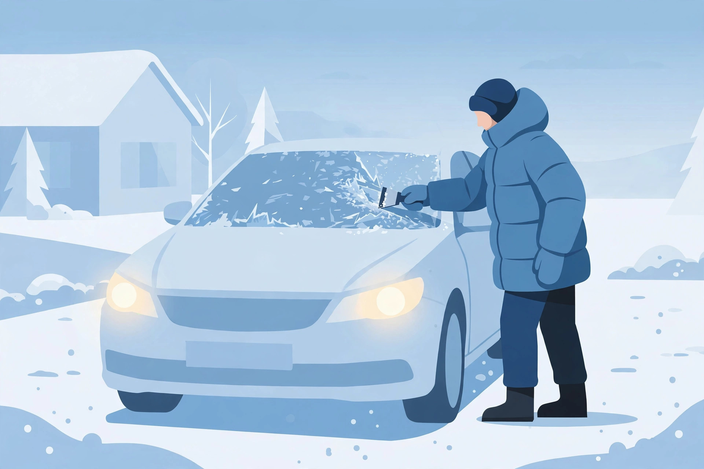

Warming Up Your Car in Winter: The 30-Second Rule, the Diesel Exception, and a Cold-Morning Routine

Every winter morning, driveways fill with idling cars — engines running for ten minutes "to warm up" while the owner finishes coffee. For most modern cars, that is mostly wasted fuel: the fastest way to warm an engine is to drive it. Here is what the research says, the exceptions the listicles skip, and a cold-morning routine you can run on autopilot.
The short answer
For a modern gasoline car: start it, give it about 30 seconds to a minute, then drive gently. In the time it takes to scrape the snow off, the car is ready.
Why long idling can do more harm than good
When a gasoline engine is cold, it burns extra fuel — a "rich" mixture. Some unburned fuel can reach the cylinder walls, and gasoline is an outstanding solvent: over extended cold idling it can wash oil off the walls, harming the lubrication of piston rings and cylinder liners. That mechanism is described by combustion researchers at Argonne National Laboratory — not folk wisdom.
The other costs of a long idle:
- Wasted fuel. Past about ten seconds, idling burns more fuel than restarting, and restarts add little wear to modern components.
- Fouled spark plugs. Incomplete combustion at idle leaves residues that dirty plugs faster — dirty plugs can raise fuel consumption 4 to 5 percent.
- Exhaust corrosion. Water condenses in a cool exhaust during long idles and can corrode it from the inside.
- Safety. Never idle long in an enclosed garage — carbon monoxide is a real danger.
The myth has real roots: pre-1980s carburetor cars needed a warm-up or they would stall. That era ended decades ago.
Idling vs. driving: the comparison
| Idling in the driveway | Driving gently | |
|---|---|---|
| Warm-up speed | Slow — an idling engine barely warms | Fast — light load warms it quickest |
| Fuel use | Burns fuel for zero miles | Every drop moves you somewhere |
| Engine wear | Extended rich idling can wash oil off cylinder walls | Light driving warms oil so it flows as designed |
| Cabin heat | Warm air arrives slowly | Heat arrives sooner because the engine works |
The three exceptions
1. Diesels are different. Everything above is about gasoline engines. Cold starts are genuinely harder for diesels: wait for the glow-plug dashboard light to go out before cranking (a few seconds on modern diesels, longer on older ones), consider a block heater on a timer, and use a winter diesel anti-gel additive in deep cold.
2. Extreme cold. Around −25°C and below, give the car a bit more idle time and drive extra gently at first. This is also where a block heater earns its keep.
3. Your windshield. Never drive until you can see. If the defroster needs a few minutes, that is a visibility wait, not an engine warm-up — scrape while you wait.
Check your local idling rules
Many cities limit idling by law. Toronto, for example, caps it at one minute in any 60-minute period (city bylaw page, updated 2026). A car started remotely and left running for fifteen minutes can violate the same rules — and burns fuel the whole time.
Your cold-morning routine, step by step
- Start the car, defroster to high. Heat and fan up, aimed at the windshield.
- Clear the car. Brush snow off every window, the lights, mirrors, and roof. This minute of work is your warm-up.
- Drive off gently. Easy acceleration and low revs for the first few minutes — no full-throttle merges yet.
- Diesel? Wait for the glow-plug light to go out before cranking, every time.
- Ease in until the gauge moves. Once the temperature needle is off the peg, drive normally.
What success looks like
You are rolling within two minutes of starting. The gauge climbs steadily, warm air arrives within a few minutes of driving, and you never smell exhaust in the garage. That is a proper winter warm-up.
FAQ
Does a remote starter hurt my car?
The starter is fine; the problem is a fifteen-minute idle, which wastes fuel
and may break local idling rules. Use it while you scrape, not as a long
preheat.
My car is 35 years old. Does this apply?
Not fully. Carburetor-era cars can suffer real wear without a proper warm-up —
follow the manual, not this guide.
The bottom line
Thirty seconds, then drive gently — that is the whole warm-up a modern gasoline car needs. Save the long idle for the windshield, mind the diesel and extreme-cold exceptions, and check your city's idling rules.